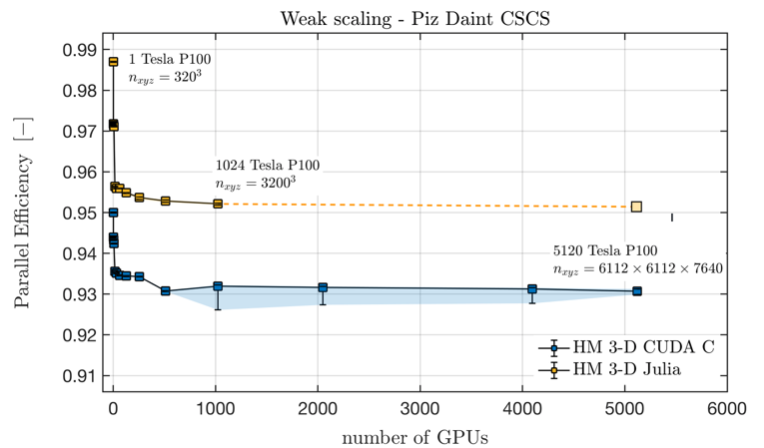

Agenda
📚 Distributed multi-XPU computing, MPI, Stokes flow
💻 Automatic documentation (Documenter.jl,Literate.jl)
🚧 Exercises:
Fake parallelisation, Julia MPI,
ImplicitGlobalGrid.jlFluid dynamics: Navier-Stokes equations, incompressible Stokes flow
Automatic documentation and CI
Distributed computing
Fake parallelisation
Julia MPI (CPU + GPU)
Using ParallelStencil.jl together with ImplicitGlobalGrid.jl
Towards Stokes II: elastic to viscous (Cauchy-Navier to (Navier-)Stokes)
Automatic documentation and CI
If this is the case or not - hold-on, we certainly have some good stuff for everyone
Adds one additional layer of parallelisation:
Global problem does no longer "fit" within a single compute node (or GPU)
Local resources (mainly memory) are finite, e.g.,
CPUs: increase the number of cores beyond what a single CPU can offer
GPUs: overcome the device memory limitation
Simply said:
If one compute device is not sufficient to solve a problem, duplicate the resource and solve a subset of the global problem on each.
Distributed (memory) computing permits to take advantage of computing "cluster", many similar compute nodes interconnected by high-throughput network. That's also what supercomputers are.
So here we go. Let's assume we want to solve a global problem. This global problem can be split into several local problems that execute concurrently.
Two scaling approaches exist:
strong scaling
weak scaling
Increasing the amount of computing resources to resolve the same global problem would increase parallelism and may result in faster execution (wall-time). This parallelisation is called strong scaling; the resources are increased but the global problem size does not change, resulting in an increase in the number of (smaller) local problems that can be solved in parallel.
This strong scaling approach is mostly used when parallelising existing CPU codes as increasing the number of parallel local problems would lead to some speed-up, reaching an optimum beyond which additional local processes would no longer be beneficial.
However, we won't follow that path for parallel multi-GPU computing. Why?
Because GPUs' performance is very sensitive to the local problem size as we experienced when trying to tune the kernel launch parameters (threads, blocks, i.e., the local problem size).
With GPUs, it is better suited to approach distributed parallelisation from a weak scaling perspective; defining first the optimal local problem size to resolve on a single GPU and then increasing the number of optimal local problems (and the number of GPUs) until reaching the global problem one originally wants to solve.
We can thus use a local problem and duplicate it in the Cartesian space to obtain a global grid, which is thus defined implicitly. Local problems exchange internal boundary conditions (to synchronise) using intra-node communication (e.g., message passing interface - MPI), as depicted on the figure hereafter:

Many things could certainly go wrong in distributed computing. However, the ultimate goal (at least for us) is to keep up with parallel efficiency.
The parallel efficiency defines the ratio between the execution time of an n-fold larger problem divided by the execution time of a single process to perform a given number of iterations.
Ideally, the parallel efficiency should stay close to 1 while increasing the number of computing resources, meaning no time is lost (no overhead) in communication (due to e.g., global reduction, inter-process communication, congestion of shared filesystem, etc...) as shown in the figure hereafter:

we will explore distributed computing with Julia's MPI wrapper MPI.jl. This will enable our codes to run on multiple CPUs and GPUs in order to scale on modern multi-CPU/GPU nodes, clusters and supercomputers. In the proposed approach, each MPI process handles one CPU or GPU.
We're going to work out the following steps to tackle distributed parallelisation in this lecture (in 5 tasks):
As a first step, we will look at the below 1-D diffusion code which solves the linear diffusion equations using a "fake-parallelisation" approach. We split the calculation on two distinct left and right domains, which requires left and right C arrays, CL and CR, respectively.
In this "fake parallelization" code, the computations for the left and right domain are performed sequentially on one process, but they could be computed on two distinct processes if the needed boundary update (often referred to as halo update in literature) was done with MPI.
The idea of this fake parallelization approach is the following:
# Compute physics locally
CL[2:end-1] .= CL[2:end-1] .+ dt*D*diff(diff(CL)/dx)/dx
CR[2:end-1] .= CR[2:end-1] .+ dt*D*diff(diff(CR)/dx)/dx
# Update boundaries (MPI)
CL[end] = ...
CR[1] = ...
# Global picture
C .= [CL[1:end-1]; CR[2:end]]We see that a correct boundary update will be the critical part for a successful implementation. In our approach, we need an overlap of 2 cells between CL and CR in order to avoid any wrong computations at the transition between the left and right domains.
Run the "fake parallelisation" 1-D diffusion code diffusion_1D_2procs.jl (also available in your /scratch/<username>/lecture08 directory on octopus), which is missing the boundary updates of the 2 fake processes and describe what you see in the visualisation.
Then, add the required boundary update:
# Update boundaries (MPI)
CL[end] = ...
CR[1] = ...in order make the code work properly and run it again. Note what has changed in the visualisation.
The next step will be to generalise the fake parallelisation with 2 fake processes to work with n fake processes. The idea of this generalized fake parallelization approach is the following:
for ip = 1:np # compute physics locally
C[2:end-1,ip] .= C[2:end-1,ip] .+ dt*D*diff(diff(C[:,ip])/dxg)/dxg
end
for ip = 1:np-1 # update boundaries
# ...
end
for ip = 1:np # global picture
i1 = 1 + (ip-1)*(nx-2)
Cg[i1:i1+nx-2] .= C[1:end-1,ip]
endThe array C contains now n local domains where each domain belongs to one fake process, namely the fake process indicated by the second index of C (ip). The boundary updates are to be adapted accordingly. All the physical calculations happen on the local chunks of the arrays. We only need "global" knowledge in the definition of the initial condition.
The previous simple initial conditions can be easily defined without computing any Cartesian coordinates. To define other initial conditions we often need to compute global coordinates. In the code below, which serves to define a Gaussian anomaly in the centre of the domain, Cartesian coordinates can be computed for each cell based on the process ID (ip), the cell ID (ix), the array size (nx), the overlap of the local domains (2) and the grid spacing of the global grid (dxg); moreover, the origin of the coordinate system can be moved to any position using the global domain length (lx):
# Initial condition
for ip = 1:np
for ix = 1:nx
x[ix,ip] = ...
C[ix,ip] = exp(-x[ix,ip]^2)
end
i1 = 1 + (ip-1)*(nx-2)
xt[i1:i1+nx-2] .= x[1:end-1,ip]; if (ip==np) xt[i1+nx-1] = x[end,ip] end
Ct[i1:i1+nx-2] .= C[1:end-1,ip]; if (ip==np) Ct[i1+nx-1] = C[end,ip] end
endn fake processes)Modify the initial condition in the 1-D diffusion code diffusion_1D_nprocs.jl (also available in your /scratch/<username>/lecture08 directory on octopus) to a centred Gaussian anomaly.
Then run this code which is missing the boundary updates of the n fake processes and describe what you see in the visualisation. Then, add the required boundary update in order make the code work properly and run it again. Note what has changed in the visualisation.
We are now ready to write a code that will truly distribute calculations on different processors using MPI.jl for inter-process communication.
octopus node for detailed information on how to run MPI GPU (multi-GPU) applications on your assigned octopus node.Let us see what are the somewhat minimal requirements that will allow us to write a distributed code in Julia using MPI.jl. We will solve the following linear diffusion physics:
for it = 1:nt
qx .= .-D*diff(C)/dx
C[2:end-1] .= C[2:end-1] .- dt*diff(qx)/dx
endTo enable distributed parallelisation, we will do the following steps:
Initialise MPI and set up a Cartesian communicator
Implement a boundary exchange routine
Create a "global" initial condition
Finalise MPI
To (1.) initialise MPI and prepare the Cartesian communicator, we do:
MPI.Init()
dims = [0]
comm = MPI.COMM_WORLD
nprocs = MPI.Comm_size(comm)
MPI.Dims_create!(nprocs, dims)
comm_cart = MPI.Cart_create(comm, dims, [0], 1)
me = MPI.Comm_rank(comm_cart)
coords = MPI.Cart_coords(comm_cart)
neighbors_x = MPI.Cart_shift(comm_cart, 0, 1)where me represents the process ID unique to each MPI process (the analogue to ip in the fake parallelisation).
Then, we need to (2.) implement a boundary update routine, which can have the following structure:
@views function update_halo(A, neighbors_x, comm)
# Send to / receive from neighbor 1 ("left neighbor")
if neighbors_x[1] != MPI.MPI_PROC_NULL
# ...
end
# Send to / receive from neighbor 2 ("right neighbor")
if neighbors_x[2] != MPI.MPI_PROC_NULL
# ...
end
return
endThen, we (3.) initialize C with a "global" initial Gaussian anomaly that spans correctly over all local domains. This can be achieved, e.g., as given here:
x0 = coords[1]*(nx-2)*dx
xc = [x0 + ix*dx - dx/2 - 0.5*lx for ix=1:nx]
C = exp.(.-xc.^2)where x0 represents the first global x-coordinate on every process (computed in function of coords) and xc represents the local chunk of the global coordinates on each local process (this is analogue to the initialisation in the fake parallelization).
Last, we need to (4.) finalise MPI prior to returning from the main function:
MPI.Finalize()All the above described is found in the code diffusion_1D_mpi.jl (also available in your /scratch/<username>/lecture08 directory on octopus), except for the boundary updates (see 2.).
Run the code diffusion_1D_mpi.jl which is still missing the boundary updates three times: with 1, 2 and 4 processes (replacing np by the number of processes and <username> with your username on octopus):
/home/<username>/.julia/bin/mpiexecjl -n np julia --project <my_script.jl>Visualise the results after each run with the vizme1D_mpi.jl code (adapt the variable nprocs!). Describe what you see in the visualisation. Then, add the required boundary update in order make the code work properly and run it again. Note what has changed in the visualisation.
MPI.Send and MPI.Recv! to send/receive the data; 3) store the received data in the right position in the Array.Congratulations! You just did a distributed diffusion solver in only 70 lines of code.
Let us now do the same in 2D: there is not much new there, but it may be interesting to work out how boundary update routines can be defined in 2D as one now needs to exchange vectors instead of single values.
Run the code diffusion_2D_mpi.jl which is still missing the boundary updates three times: with 1, 2 and 4 processes.
Visualise the results after each run with the vizme2D_mpi.jl code (adapt the variable nprocs!). Describe what you see in the visualisation. Then, add the required boundary update in order make the code work properly and run it again. Note what has changed in the visualisation.
The last step is to create a multi-GPU solver out of the above multi-CPU solver. CUDA-aware MPI is of great help in this task, because it allows to directly pass GPU arrays to the MPI functions.
Besides facilitating the programming, it can leverage Remote Direct Memory Access (RDMA) which can be of great benefit in many HPC scenarios.
Translate the code diffusion_2D_mpi.jl from Task 4 to GPU using GPU array programming. Note what changes were needed to go from CPU to GPU in this distributed solver.
copyto! function in order to copy the data from the GPU memory into the send buffers (CPU memory) or to copy the receive buffer data to the GPU array.This completes the introduction to distributed parallelisation with Julia.
Note that high-level Julia packages as for example ImplicitGlobalGrid.jl can render distributed parallelisation with GPU and CPU for HPC a very simple task.
Let's check it out!
ImplicitGlobalGrid.jlLet's have look at ImplicitGlobalGrid.jl's repository.
ImplicitGlobalGrid.jl can render distributed parallelisation with GPU and CPU for HPC a very simple task. Moreover, ImplicitGlobalGrid.jl elegantly combines with ParallelStencil.jl.
Finally, the cool bit: using both packages together enables to hide communication behind computation. This feature enables a parallel efficiency close to 1.
For this demo, we'll start from the diffusion_2D_perf_xpu.jl code (also available in your /scratch/<username>/lecture08 directory on octopus).
Only a few changes are required to enable multi-XPU execution, namely:
initialise the implicit global grid
use global coordinates to compute the initial condition
update halo (and overlap communication with computation)
finalise the global grid
tune visualisation
To (1.) initialise the global grid, one first needs to use the package and import MPI
using ImplicitGlobalGrid
import MPIThen, one can add the global grid initialisation in the # Derived numerics section
me, dims = init_global_grid(nx, ny, 1) # Initialization of MPI and more...
@static if USE_GPU select_device() end # select one GPU per MPI local rank (if >1 GPU per node)
dx, dy = Lx/nx_g(), Ly/ny_g()Note that we include the select_device() function to map each MPI process to a unique GPU on the node.
hello_mpi_gpu.jl code to get an idea on how to select unique GPU using node-local MPI infos.Then, for (2.), one can use x_g() and y_g() to compute the global coordinates in the initialisation (to correctly spread the Gaussian distribution over all local processes)
C = @zeros(nx,ny)
C .= Data.Array([exp(-(x_g(ix,dx,C)+dx/2 -Lx/2)^2 -(y_g(iy,dy,C)+dy/2 -Ly/2)^2) for ix=1:size(C,1), iy=1:size(C,2)])The halo update (3.) can be simply performed adding following line after the compute! kernel
update_halo!(C)Now, when running on GPUs, it is possible to hide MPi communication behind computations! This option implements as:
@hide_communication (8, 2, 0) begin
@parallel compute!(C2, C, D_dx, D_dy, dt, _dx, _dy, size_C1_2, size_C2_2)
C, C2 = C2, C # pointer swap
update_halo!(C)
endThe @hide_communication (8, 2, 0) will first compute the first and last 8 and 2 grid points in x and y dimension, respectively. Then, while exchanging boundaries the rest of the local domains computations will be perform (overlapping the MPI communication).
To (4.) finalise the global grid,
finalize_global_grid()needs to be added before the return of the "main".
The last changes to take car of is to (5.) handle visualisation in an appropriate fashion. Here, several options exists.
One approach would for each local process to dump the local domain results to a file (with process ID in the filename) in order to reconstruct to global grid with a post-processing visualisation script (as done in the previous examples).
Another approach would be to gather the global grid results on a master process before doing further steps as disk saving or plotting.
To implement the latter, one needs to define global array for visualisation:
nx_v, ny_v = (nx-2)*dims[1], (ny-2)*dims[2]
if (nx_v*ny_v*sizeof(Data.Number) > 0.8*Sys.free_memory()) error("Not enough memory for visualization.") end
C_v = zeros(nx_v, ny_v) # global array for visu
C_inn = zeros(nx-2, ny-2) # no halo local array for visu
Xi_g, Yi_g = LinRange(dx+dx/2, Lx-dx-dx/2, nx_v), LinRange(dy+dy/2, Ly-dy-dy/2, ny_v) # inner points onlyThen, the plotting routine can be adapted to first gather the inner points of the local domains into the global array (using gather! function) and then plot and/or save the global array (here C_v) from the master process me==0:
C_inn .= C[2:end-1,2:end-1]; gather!(C_inn, C_v)
if (me==0)
opts = (aspect_ratio=1, xlims=(Xi_g[1], Xi_g[end]), ylims=(Yi_g[1], Yi_g[end]), clims=(0.0, 1.0), c=:davos, xlabel="Lx", ylabel="Ly", title="time = $(round(it*dt, sigdigits=3))")
heatmap(Xi_g, Yi_g, Array(C_v)'; opts...); frame(anim)
endUSE_GPU = false; however, the communication and computation overlap feature is then not available as its implementation relies on leveraging CUDA streams.Transforming the Cauchy-Navier elastic wave solver into a Navier-Stokes or viscous Stokes flow solver is an exercise related to this lecture 8. See the exercise section for detailed description.
Let's finally wrap-up recalling what we learned today about distributed computing in Julia using GPUs:
We used fake parallelisation to understand the correct boundary exchange procedure.
We implemented 1D and 2D diffusion solvers in Julia using MPI for distributed memory parallelisation on both CPUs and GPUs (using blocking messages).
We saw how combining ParallelStencil.jl with ImplicitGlobalGrid.jl permits to implement distributed memory parallelisation on multiple CPU and GPUs.
This lecture we will learn
...